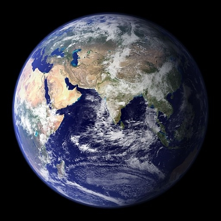

Hello, welcome to Earth Science
Earth Science Notes
Notes on Absolute Dating and Radiometric Dating
Introduction
Relative Dating: Comparing the ages of rocks to understand Earth's history.
Absolute Dating: Determining the exact age of objects in years.
Radiometric Dating:Involves the instability of atoms and their predictable breakdowns, known as half-lives.
Key Concepts
Radioactive Decay: The process by which unstable atoms emit particles until
they become stable.
Stable Atoms: Remain unchanged indefinitely.
Unstable Atoms: Break down to achieve stability.
Results in the formation of different materials known as isotopes.
Isotopes and Radiation
Isotopes: Atoms of the same element with different numbers of neutrons, resulting in radiation emission. Example: Carbon-14 (C-14) decays into Nitrogen-14 (N-14) at a predictable rate.